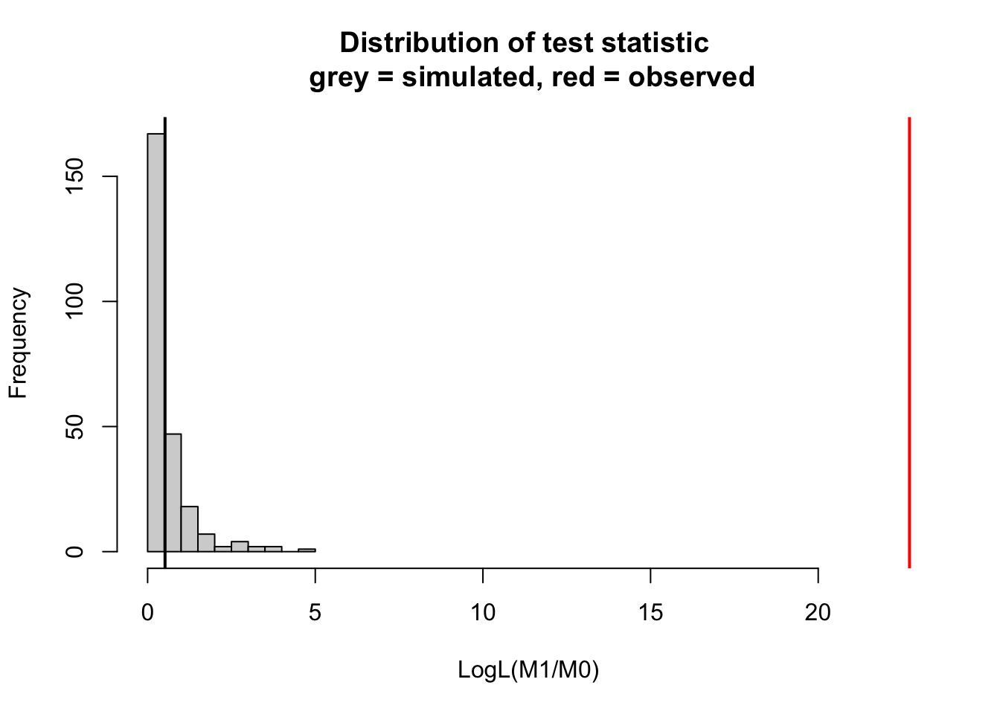
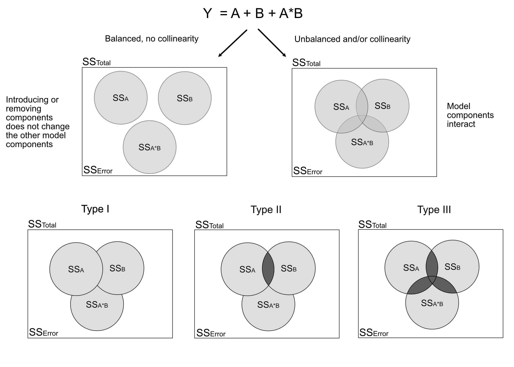
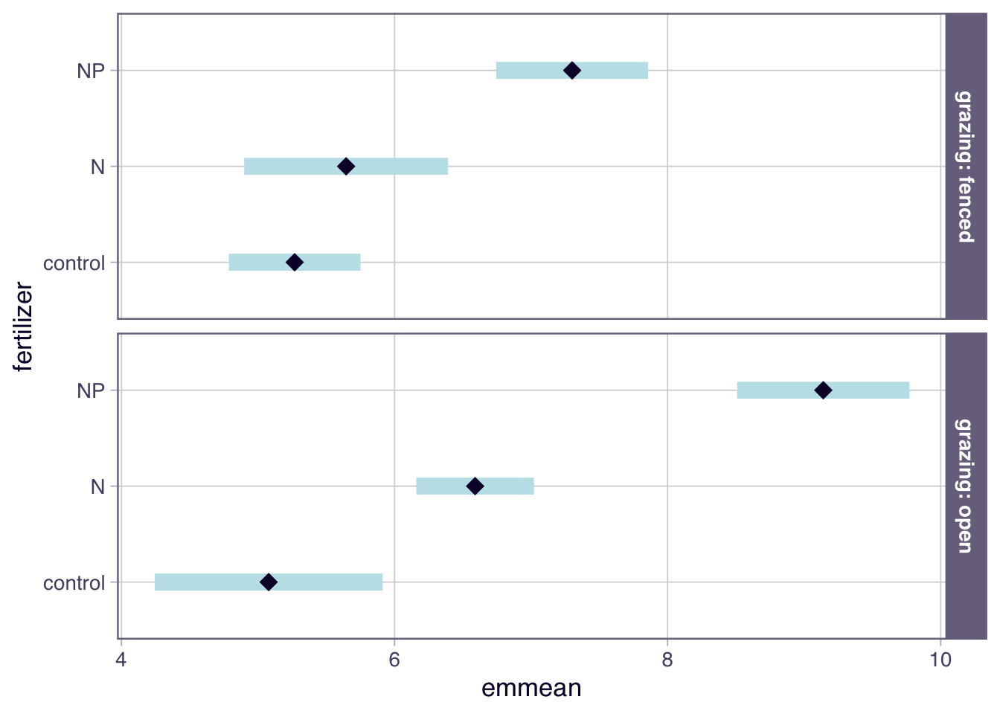

that an ANOVA is a test on top of a regression model, how it measures and tests the improvement of model fit, and how to partition the model into custom blocks (Section 3.1, Section 3.2.2, Section 3.1.2);
why the order of the predictors matters for collinear predictors, and how to choose between type I, II and III ANOVA (Section 3.2.3, Section 3.2.3.2);
why contrast coding and centering change type III results for terms in interactions, and how emmeans gives results that do not depend on the coding, including simple effects (Section 3.2.4, Note 3.1);
why raw variance fractions are too high for terms with many df (Section 3.2.5).
Workflow steps (Section 1.1.2): step 3 (coding of factors), step 6 (tests on the fitted model).
Prerequisites: the linear model and its handling of categorical predictors (Chapter 2, Section 2.6).
3.1 The idea of ANOVA
ANOVA stands for ANalysis Of VAriance. The basic idea is to find out how much of the signal (variance) is explained by different factors. We had already briefly introduced ANOVA in the section on ANOVA (Section 2.6.2) in the chapter on linear regression.
The problem with explaining ANOVA is that the term is fraught with historical meanings and explanations that are no longer relevant. It used to be that ANOVA is a stand-alone method that you use for experimental designs with different treatments, that ANOVA assumes normal distribution and partitions sum of squares, that there are repeated-measure ANOVAs and all that, and those varieties of ANOVA partly still exist, but in general, there is a much simpler and general explanation of ANOVA:
Modern explanation: ANOVA is not a statistical model, but a hypothesis test that can be performed on top of any regression model. What this test is doing is to measure how much model fit improves when a predictor is added, and if this improvement is significant.
3.1.1 An example
As an example, here is an ANOVA (function anova()) performed on the fit of a linear model
fit =lm(Ozone ~ Wind + Temp, data = airquality)anova(fit)
Analysis of Variance Table
Response: Ozone
Df Sum Sq Mean Sq F value Pr(>F)
Wind 1 45284 45284 94.808 < 2.2e-16 ***
Temp 1 25886 25886 54.196 3.149e-11 ***
Residuals 113 53973 478
---
Signif. codes: 0 '***' 0.001 '**' 0.01 '*' 0.05 '.' 0.1 ' ' 1
anova() or summary(aov())? For a linear model, anova(fit) and summary(aov(fit)) give the same sequential (type I) ANOVA table. We use anova(), the general R function for comparing models (its use for GLMs and mixed models is discussed in the respective chapters); aov() is mainly needed as input for post-hoc tests such as TukeyHSD() (see Section 2.6.3).
In the standard ANOVA for the LM, model fit is measured by the reduction in residual sum of squares. Let’s look at the example above. In the ANOVA table above, we (virtually) start with an intercept only model. Now, what the table tells us is that adding Wind to the model reduces the Sum Sq. by 45284, and adding also Temp reduces the Sum Sq by another 25886, which leaves us with 53973 residual sum sq. From this, we can also conclude that the total sum of squares of the response is 53973 + 25886 + 45284 = 125143. Let’s check this:
sum((fit$model$Ozone -mean(fit$model$Ozone))^2)
[1] 125143.1
Thus, we can compute the fraction of variance attributed to each model component and to the residuals (note the last entry is the unexplained remainder, not an explained component):
totalSumSq =45284+25886+53973# total sum of squares45284/totalSumSq # R2 Wind
Moreover, the ANOVA table performs tests to see if the improvement of model fit is significant, compared to the model without the respective term. This is important because adding a predictor always improves model fit, even if it has no effect (we will discuss this in more detail in the chapter on model selection, in particular Section 8.2.1).
To interpret the p-values, consider that H0 = the simpler model is true, thus we test if the improvement of model fit is higher than what we would expect if the predictor has no effect.
3.1.2 Customizing the partitioning
An important thing to note is that in an ANOVA, you don’t need to always separate one predictor after the other, you can also work in blocks of predictors, or entire components of the model.
There are a number of cases where this makes a lot of sense. A typical example is, if you are fitting a polynomial of a predictor. Consider, for example, the following regression:
fit =lm(Ozone ~ Wind +I(Wind^2) + Temp +I(Temp^2), data = airquality)
Maybe, we would like to ask how much variance is explained by Wind + Wind^2, and how much by Temp + Temp^2. In this case, we can perform custom ANOVA, using the anova() function that you may have seen in the solution of the exercise in Section 2.5.2, to compare models via a likelihood ratio test (LRT).
m0 =lm(Ozone ~1, data = airquality)m1 =lm(Ozone ~ Wind +I(Wind^2) , data = airquality)m2 =lm(Ozone ~ Wind +I(Wind^2) + Temp +I(Temp^2), data = airquality)anova(m0, m1, m2)
Analysis of Variance Table
Model 1: Ozone ~ 1
Model 2: Ozone ~ Wind + I(Wind^2)
Model 3: Ozone ~ Wind + I(Wind^2) + Temp + I(Temp^2)
Res.Df RSS Df Sum of Sq F Pr(>F)
1 115 125143
2 113 64360 2 60783 81.397 < 2.2e-16 ***
3 111 41445 2 22915 30.686 2.464e-11 ***
---
Signif. codes: 0 '***' 0.001 '**' 0.01 '*' 0.05 '.' 0.1 ' ' 1
Which separates the R2 between Wind and Temp, but not between the linear and quadratic effects of the two.
3.2 Fundamental issues in ANOVA
There are five basic problems that we will come back again when generalizing this principle across a range of models:
How should we measure “improvement of model fit”. Traditionally, improvement is measured by the reduction of the residual sum of squares, but for GLMs, we will have to expand this definition
How should we test if the improvement in fit is significant? For simple models, this is not so much a problem
How should we partition variance if predictors are collinear, and thus the order in which predictors are included matters
Related to the previous point, for categorical predictors, the choice of contrasts changes the results of the type III ANOVA (see Section 3.2.4).
Should we correct for complexity?
Let’s look at the problem one by one:
3.2.1 Measuring model fit
The definition of model fit via sum of squares makes sense as long as we work with linear models.
For GLMs, this definition doesn’t make sense any more. A number of so-called pseudo-R2 metrics have been proposed. Most of them are based on the likelihood (as a measure of model fit) and try to recover as far as possible the properties of an R2 for the linear model.
A common metric is McFadden pseudo-R2, which is defined as 1-[LogL(M)/LogL(M0)], where M is our model, and M0 is an intercept only model. However, many other definitions of “importance” are possible, and in the broadest sense, you could say the principle of ANOVA is to separate out the importance of different predictors or model components, however this importance is measured.
3.2.2 Testing if the improvement is significant
The test used in our example before is an F-test. The F-test is used for models that assume normal distribution. The F-test can be interpreted as a special case of a likelihood ratio test (LRT, for the reason see Tip 3.1), which you may have seen in the solution of the exercise in Section 2.5.2; more on LRTs in the section on likelihood-ratio tests (Section 8.2.1). An LRT compares two nested models, M0 (simpler) and M1:
H0: M0 is true
Test statistic: \(-2 \log \frac{L(M_0)}{L(M_1)} = -2 \left[\log L(M_0) - \log L(M_1)\right]\), i.e. minus twice the difference in maximized log-likelihoods
Under H0 and relatively broad regularity conditions, the test statistic is asymptotically chi-squared distributed, with df = difference in the number of free parameters of the models M1, M0
Tip 3.1: Why the F-test is a likelihood ratio test
The general principle behind both tests is the likelihood ratio test, explained in the section on likelihood-ratio tests (Section 8.2.1). For a linear model with normal residuals, the maximized log-likelihood depends on the data only through the residual sum of squares, \(\log L = -\frac{n}{2} \log(RSS/n) + \text{const}\). The LRT statistic for two nested models is therefore
\[-2 \log \frac{L(M_0)}{L(M_1)} = n \log \frac{RSS_0}{RSS_1} = n \log \left(1 + \frac{q \, F}{n - p_1}\right) \quad \text{with} \quad F = \frac{(RSS_0 - RSS_1)/q}{RSS_1/(n - p_1)},\]
where \(q\) is the number of additional parameters in M1 and \(p_1\) the number of regression coefficients of M1. The LRT statistic is a monotone function of F, so both tests rank all possible results in the same way: the F-test is an LRT. They differ only in the reference distribution. The chi-squared distribution of the LRT is a large-sample approximation, while the F distribution is exact for linear models with normal residuals, because it accounts for the fact that the residual variance is estimated. This is why anova() uses the F-test for lm, and the chi-squared LRT for GLMs and mixed models, for which no exact distribution exists. For nonlinear least squares (Chapter 5), anova() also reports an F-test, but there both distributions are approximations.
Analysis of Variance Table
Model 1: Ozone ~ Temp
Model 2: Ozone ~ Temp + Wind
Res.Df RSS Df Sum of Sq F Pr(>F)
1 109 62367
2 108 50989 1 11378 24.101 3.262e-06 ***
---
Signif. codes: 0 '***' 0.001 '**' 0.01 '*' 0.05 '.' 0.1 ' ' 1
LR =as.numeric(2* (logLik(mF1) -logLik(mF0)))LR # identical to nrow(datCC) * log(1 + F / (nrow(datCC) - 3))
[1] 22.35919
pchisq(LR, df =1, lower.tail =FALSE) # LRT with chi-squared approximation
[1] 2.261289e-06
With 111 observations, both p-values are practically the same; for small samples, the F-test is the one to use.
This setup works for LMs and GLMs, but runs into problems when the definition how many df a model has is unclear. This is in particular the case for mixed models. In this case, one can resort to simulated LRTs. Simulated LRTs are a special case of the bootstrap (see the section on nonparametrics and the bootstrap, Section 2.12, in particular Section 2.12.2). More precisely, they are a parametric bootstrap: instead of assuming that the test statistic follows a chi-squared distribution (point 3 above), we generate its distribution under H0 by simulating new data from the fitted model M0. Because this method is crucial for mixed models, I want to shortly explain it already here:
Simulate data from H0 (= the fitted model M0)
Re-fit M0 and M1, and calculate likelihood ratios
Repeat n times to get an idea about the expected increase in likelihood when moving to M1 under the assumption that M0 is correct
library(DHARMa)m0 =lm(Ozone ~ Wind , data = airquality)m1 =lm(Ozone ~ Wind + Temp, data = airquality)simulateLRT(m0, m1)

DHARMa simulated LRT
data: m0: m0 m1: m1
LogL(M1/M0) = 22.723, p-value < 2.2e-16
alternative hypothesis: M1 describes the data better than M0
# for comparisonanova(m0, m1)
Analysis of Variance Table
Model 1: Ozone ~ Wind
Model 2: Ozone ~ Wind + Temp
Res.Df RSS Df Sum of Sq F Pr(>F)
1 114 79859
2 113 53973 1 25886 54.196 3.149e-11 ***
---
Signif. codes: 0 '***' 0.001 '**' 0.01 '*' 0.05 '.' 0.1 ' ' 1
A simulated p-value cannot be smaller than about 1/(n+1), where n is the number of simulations (250 by default in simulateLRT(), i.e. about 0.004). If none of the simulations reaches the observed value, report p < 1/(n+1) rather than the p-value printed by the function.
3.2.3 Collinearity means that order matters
Another key problem in ANOVA, and a source of much confusion, is how to deal with the fact that often, the order in which model components are added matters. Compare the results of our previous ANOVA with this one, where I only flipped the order of Temp and Wind:
m1 =lm(Ozone ~ Wind + Temp, data = airquality)m2 =lm(Ozone ~ Temp + Wind, data = airquality)anova(m1)
Analysis of Variance Table
Response: Ozone
Df Sum Sq Mean Sq F value Pr(>F)
Wind 1 45284 45284 94.808 < 2.2e-16 ***
Temp 1 25886 25886 54.196 3.149e-11 ***
Residuals 113 53973 478
---
Signif. codes: 0 '***' 0.001 '**' 0.01 '*' 0.05 '.' 0.1 ' ' 1
anova(m2)
Analysis of Variance Table
Response: Ozone
Df Sum Sq Mean Sq F value Pr(>F)
Temp 1 61033 61033 127.781 < 2.2e-16 ***
Wind 1 10137 10137 21.223 1.08e-05 ***
Residuals 113 53973 478
---
Signif. codes: 0 '***' 0.001 '**' 0.01 '*' 0.05 '.' 0.1 ' ' 1
The result is markedly different, and the reason is that anova() (like aov()) performs a so-called type I ANOVA. The type I ANOVA adds variables in the order in which they are in the model formula, and because Temp and Wind are collinear, the variable that is added first to the model will absorb variation from the other, and thus seems to explain more of the response.
There are other types of ANOVA that avoid this problem. The so-called type II ANOVA shows for each variable only the part that is uniquely attributable to the respective variable. This is done by discarding the R2 part that is shared by the two predictors due to collinearity (see Figure 3.1 below)
There is also type III ANOVA, which, unlike type II, adjusts each term for all other terms, including the interactions it is part of. For such terms, the results depend on centering and contrast coding (details in Caution 3.1 and Section 3.2.4).
Why is there an (Intercept) row in type III, but not in type II? Type II respects the hierarchy of the model (marginality principle): a term is only tested in models without the terms that build on it, e.g. a main effect A is tested without the interaction A:B. As all terms build on the intercept, the intercept is never tested. Type III, by design, does not follow this hierarchy and tests every term given all others: for the intercept, whether the prediction is zero at Wind = 0 and Temp = 0 (rarely of interest), and for main effects in models with interactions, a hypothesis that depends on centering and coding.
In this model without interaction, type III is identical to type II. Differences only arise for terms that are part of an interaction, as shown in Caution 3.1.
Caution 3.1: Type III ANOVA and centering of numeric predictors
In a model with an interaction x1 * x2, the main effect of x1 describes the effect of x1 at x2 = 0 (see Section 3.2.4.2, Section 2.10.3 and Schielzeth (2010)). The type III ANOVA tests exactly this. If x2 is uncentered, x2 = 0 may be far outside the data (e.g. Wind = 0 mph), and the type III test of x1 then asks a question you are probably not interested in. Centering x2 moves this point to the mean of x2. Type II, in contrast, is not affected by centering:
fit =lm(Ozone ~scale(Temp) *scale(Wind), data = airquality)fit2 =lm(Ozone ~ Temp * Wind, data = airquality)car::Anova(fit, type ="II")
In short: if you run a type III ANOVA on a model with interactions, center all numeric predictors that are part of an interaction, so that main effects are tested at a sensible point (instead of the mean, you can also subtract another value that is meaningful for your question, e.g. a reference temperature; for strongly skewed predictors, the mean may be an atypical value, and the median or a biologically meaningful value is often better). Alternatively, use emmeans::joint_tests(), which needs no centering (see Note 3.1); for the general recommendations, see Section 3.2.3.2.
Polynomial terms are a special case: in x + I(x^2), R does not know that I(x^2) builds on x, so type II and type III both test the linear term at x = 0, and both change with centering. It is usually better to test the polynomial as a whole, e.g. with poly(x, 2) (one test with 2 df), or by comparing models as in Section 3.1.2. poly() builds orthogonal polynomial terms whose coefficients are not directly interpretable, so use it for testing, and x + I(x^2) if you want to interpret the coefficients.
For categorical predictors, the same problem arises through the choice of contrasts. This is explained in Section 3.2.4.
Schielzeth, H. (2010) “Simple means to improve the interpretability of regression coefficients,”Methods in Ecology and Evolution, 1(2), pp. 103–113. Available at: https://doi.org/10.1111/j.2041-210X.2010.00012.x.
3.2.3.1 Visualization of ANOVA fractions
Figure 3.1 gives an overview of the situation for 2 predictors A and B and their interaction. The upper left figure corresponds to the case where we have no collinearity between either of those variables. The figure on the top right (and similarly types I - III) are the three possible types of ANOVA for variables with collinearity. The “overlap” between the circles depicts the shared part, i.e. the variability that can be expressed by either variable (due to collinearity). Note that the shares in Type II, III do not add up to 1, as there is a kind of “dark variation” that we cannot securely add to either variable. Take the figure as a heuristic: it describes types I and II well, but type III sums of squares are not a partition of variance at all (the “overlaps” can even be negative). Type III is better understood as testing a particular hypothesis, as explained in Section 3.2.4.2.

Figure 3.1: Heuristic view of how type I, II and III ANOVA assign shared variation between predictors A, B and their interaction (A*B in the figure, A:B in R notation). The type III panel holds only approximately, for sum-to-zero coding and centered predictors.
3.2.3.2 General recommendations
Which type of ANOVA is most appropriate? Unfortunately, the answer is both “it depends on what you want to know” and “there is a lot of discussion about this topic”. I would say the following:
If you have an orthogonal, balanced design, type I and II are identical. Type III is identical as well but ONLY if categorical predictors use sum-to-zero contrasts (see Tip 2.1) and numeric predictors that are part of interactions or polynomial terms are centered (see Section 3.2.4.2).
If not, choose type II or type III ANOVA. Type I is really only appropriate in this case if you explicitly want to have the order-dependence (e.g. if you assume that one of the predictors always takes precedence for biological reasons).
To decide between II and III, note that type II can be read as a (partial) partition of the explained variance, at least in models without interactions, whereas type III sums of squares are better understood as tests of specific hypotheses (main effects at the reference level or the mean of the other predictors). The main question is how main effects should be tested when the model also contains an interaction. We look at this in detail for categorical predictors in Section 3.2.4. Decide before looking at the results, from your question and design, whether the model contains the interaction and whether you are interested in average or in conditional effects, and report the full model either way. Some general hints:
No interaction in the model: use type II (car::Anova(fit)). Without interactions, type II and III are identical anyway. Test polynomial terms as a whole, e.g. with poly(x, 2) (see Caution 3.1).
Interaction in the model: a main effect is now an average over an effect that varies, so ask yourself first if such an average is meaningful for your question. Often, it is more informative to describe the interaction directly, i.e. the effect of one predictor at different values of the other (simple effects; for numeric predictors, see Section 2.10.3; for factors, see Note 3.1). Judge the interaction by its estimated simple effects with confidence intervals, not by its p-value; if they differ strongly, point out that a main effect is only an average over them. If you do want main effects, both types are defensible:
Type II (the default of car::Anova()) tests main effects without the interaction, i.e. respecting the hierarchy of the model (marginality principle, Nelder, 1977). Variance shared between main effects and interaction stays with the main effects, so if the interaction is weak, type II is often the more powerful test. With a substantial interaction, however, the main effect is an average over the other predictor whose weights depend on the cell sizes (but are not simply proportional to them).
Type III tests main effects averaged with equal weights over the other predictor, a hypothesis that is independent of the design and remains meaningful if there is an interaction; if the interaction is in fact weak, it has somewhat less power than type II. It requires centered numeric predictors (Caution 3.1) and, for factors, sum-to-zero contrasts (Section 3.2.4).
Which of the two is preferable is debated (e.g. Shaw and Mitchell-Olds (1993) favour type III, Langsrud (2003) and Fox and Weisberg (2019) type II; see also Hector, Von Felten and Schmid (2010)); report which one you used. The test of the interaction itself is identical in both. Don’t remove an interaction only because it is not significant to simplify the ANOVA; this is a model selection step (see the chapter on model selection, in particular Section 8.3).
Note that for reasonably balanced and orthogonal data, as they occur in controlled experiments, type II and type III with sum-to-zero contrasts usually give nearly identical results. However, with stronger imbalance or collinearity together with an interaction, differences tend to get larger, even with correct coding and centering (type II then often, but not always, gives the larger F values), and partitioning can get fragile due to the large shared components. Such differences are not a sign of an error, but reflect that the two types test different hypotheses (see the example in Hector, Von Felten and Schmid, 2010). Note that collinearity is not restricted to numeric predictors: a factor can also be correlated with a numeric predictor (e.g. if some islands lie at higher elevations than others), with the same consequences for the order dependence of type I and the differences between type II and III. Check collinearity, e.g. with the correlation between predictors or, with more predictors, with variance inflation factors of the model without interactions (see Section 2.8; with interaction terms, vif() warns and the values are not meaningful), and center the predictors. Type II is robust to centering and coding, but a main effect is only interpretable as such if the interaction is weak; type III can differ considerably, in particular when predictors are skewed, correlated and interact. Don’t read a loss of significance as the loss of an effect, or shared fractions as causal importance, and put more emphasis on effect estimates with confidence intervals, on testing blocks of predictors by model comparison (Section 3.1.2), or on hierarchical partitioning (Lai, Zou, J. Zhang, et al., 2022; Lai, Zou, S. Zhang, et al., 2022).
Note also that, for many cases, there are good alternatives to ANOVA. ANOVA derives its popularity from its long history for balanced experimental designs, and its presence in every textbook. For unbalanced collinear observation data, however, standardized effect sizes, average marginal effects or marginal means (see Note 3.1) may be better choices.
Nelder, J.A. (1977) “A reformulation of linear models,”Journal of the Royal Statistical Society: Series A (General), 140(1). Available at: https://doi.org/10.2307/2344517.
Shaw, R.G. and Mitchell-Olds, T. (1993) “ANOVA for unbalanced data: An overview,”Ecology, 74(6), pp. 1638–1645. Available at: https://doi.org/10.2307/1939922.
Langsrud, Ø. (2003) “ANOVA for unbalanced data: Use type II instead of type III sums of squares,”Statistics and Computing, 13(2), pp. 163–167. Available at: https://doi.org/10.1023/A:1023260610025.
Fox, J. and Weisberg, S. (2019) An R companion to applied regression. 3rd ed. Thousand Oaks, CA: Sage.
Hector, A., Von Felten, S. and Schmid, B. (2010) “Analysis of variance with unbalanced data: An update for ecology & evolution,”Journal of animal ecology, 79(2), pp. 308–316.
Lai, J., Zou, Y., Zhang, J., et al. (2022) “Generalizing hierarchical and variation partitioning in multiple regression and canonical analyses using the rdacca.hp R package,”Methods in Ecology and Evolution, 13(4), pp. 782–788. Available at: https://doi.org/10.1111/2041-210X.13800.
Lai, J., Zou, Y., Zhang, S., et al. (2022) “Glmm.hp: An R package for computing individual effect of predictors in generalized linear mixed models,”Journal of Plant Ecology, 15(6), pp. 1302–1307. Available at: https://doi.org/10.1093/jpe/rtac096.
Reporting: in the methods, state which ANOVA type you used, how it was computed and how predictors were centered (and, for factors, coded). In the results, report effect sizes, not only p-values. If type II and III disagree (e.g. in strongly unbalanced designs with an interaction), report both and explain why.
Beyond the linear model: the same logic (type I vs. II vs. III, centering) applies to GLMs and mixed models; specific points are discussed in the chapters on random effects (Section 4.5.4, Caution 4.2) and GLMs (Caution 9.1).
CautionExercise
Try out the difference between type I, II, III ANOVA for the airquality data set, either for the simple Wind + Temp model, or for more complicated models. If you want to see the effects of Type III Anova, you need to add an interaction (see Caution 3.1).
TipSolution
Let’s use the model with Wind, Temp, Solar.R, and their interactions. Wind and Temp, and Solar.R and Temp are collinear.
fit =lm(Ozone ~ (scale(Wind) +scale(Temp) +scale(Solar.R))^2 , data = airquality)summary(fit)
Call:
lm(formula = Ozone ~ (scale(Wind) + scale(Temp) + scale(Solar.R))^2,
data = airquality)
Residuals:
Min 1Q Median 3Q Max
-38.685 -11.727 -2.169 7.360 91.244
Coefficients:
Estimate Std. Error t value Pr(>|t|)
(Intercept) 38.025 2.052 18.535 < 2e-16 ***
scale(Wind) -11.801 2.087 -5.654 1.38e-07 ***
scale(Temp) 15.689 2.172 7.222 8.78e-11 ***
scale(Solar.R) 8.664 2.157 4.016 0.000112 ***
scale(Wind):scale(Temp) -5.377 1.966 -2.735 0.007332 **
scale(Wind):scale(Solar.R) -2.294 2.122 -1.081 0.282122
scale(Temp):scale(Solar.R) 4.315 2.084 2.070 0.040889 *
---
Signif. codes: 0 '***' 0.001 '**' 0.01 '*' 0.05 '.' 0.1 ' ' 1
Residual standard error: 19.17 on 104 degrees of freedom
(42 observations deleted due to missingness)
Multiple R-squared: 0.6863, Adjusted R-squared: 0.6682
F-statistic: 37.93 on 6 and 104 DF, p-value: < 2.2e-16
The interactions are identical, and because the variables are centered, the main effects of Wind and Temp are similar. They are not identical though, and for Solar.R the difference is considerable: centering removes the dependence on an arbitrary zero point, but it does not remove all correlation between a main effect and the interactions that contain it (here, Solar.R is skewed, and even after centering it still correlates with its interaction terms: r = 0.29 with Wind:Solar.R and -0.48 with Temp:Solar.R).
For categorical predictors, a complication occurs that is related, but not identical, to the issues discussed in Section 3.2.3: in case of collinearity, type I, II and III ANOVA can give very different answers (as before), but type III additionally depends on how the factors’ contrasts are coded (see Section 2.6.1). As this regularly causes confusion, let’s look at a typical example.
3.2.4.1 The problem
Imagine a field experiment with three fertilizer treatments (control, N, NP), crossed with grazing (plots fenced or open to grazers). The design was planned balanced, but some plots were lost, so the number of plots per treatment combination now differs:
Before fitting, it is always worth checking the order of the factor levels, because the first level is the reference level for R’s default treatment contrasts. Factors created from character vectors (e.g. by factor(), or when reading data) are ordered alphabetically, and whether upper or lower case comes first can depend on your computer settings. Here, expand.grid() keeps the order we gave, so control is the first level and thus the reference, as we want:
levels(plots$fertilizer)
[1] "control" "N" "NP"
# plots$fertilizer = relevel(plots$fertilizer, ref = "control") # if needed
relevel() only changes the reference level. To set the order of all levels, e.g. for a treatment none / low / high (which R would sort as high, low, none), use factor(x, levels = c("none", "low", "high")).
Because the design is unbalanced, fertilizer and grazing are no longer independent (orthogonal): e.g. most N plots are open. As a consequence, the type I ANOVA depends on the order of the predictors. Grazing gets F = 18.9 when it is added first, but F = 14.2 when it is added after fertilizer:
fit =lm(biomass ~ grazing * fertilizer, data = plots)anova(fit)
This is the order problem we discussed in Section 3.2.3.
More surprising, however, is that in this case results of type III ANOVA additionally depend on the choice of contrasts: if we fit the same model once with R’s default treatment contrasts, and once with sum-to-zero contrasts:
With treatment contrasts, grazing has no significant effect (p = 0.69), with sum-to-zero contrasts, it is highly significant (p = 0.0015).
3.2.4.2 What is going on?
The key to understanding this is the following:
The coding of a factor never changes the fitted model. It only changes which hypotheses the individual coefficients and the type III tests examine.
We can confirm the first part of the statement by looking at the predictions of the two models, which are indeed identical:
all.equal(fitted(fit), fitted(fitSum))
[1] TRUE
This holds as long as the model contains all lower-order terms of each interaction. If you, e.g., remove a main effect but keep its interaction, or use uncorrelated random slopes in a mixed model (see Caution 4.2), the coding also changes the model itself.
For the second part, we have to consider what hypothesis / comparisons are expressed by the contrasts. In a model with interactions, every lower-order term (a main effect, or a two-way interaction in a model with a three-way interaction) is estimated and tested at the zero point of the variables it interacts with. This zero point is
for a treatment-coded factor (R default): the reference level
for a sum-to-zero coded factor (contr.sum, contr.helmert, contr.poly; see Tip 2.1): the unweighted average over its levels
for a numeric predictor: the value 0, or the centering value if the predictor was centered
Thus, with treatment contrasts, the “main effect” of grazing in the type III ANOVA is the effect of grazing in the control plots (the reference level of fertilizer), where grazing has hardly any effect. With sum-to-zero contrasts, it is the effect of grazing averaged equally over the three fertilizer treatments. Both tests are correct, they just answer different questions. Note that this is the same rule that you already know from the regression table: in summary(fit), the grazing estimate is the effect of grazing at the reference level of fertilizer. The same applies to the (Intercept) row of the type III table: with treatment contrasts, it tests if the mean of fenced control plots is zero, with sum-to-zero contrasts if the unweighted average over all treatment combinations is zero.
The following table summarizes which results are affected by the coding:
Result
Depends on coding?
Predictions, residuals, R², AIC, likelihood ratio tests
no
Type I and type II ANOVA
no
Type III test of the highest-order interaction
no
Type III test of terms that are part of an interaction
yes
Individual coefficients and p-values in summary()
yes
Results from emmeans() and joint_tests() (see Note 3.1)
no
Thus, if you want type III tests of main effects that are averaged over the levels of the other factors, use sum-to-zero contrasts for all factors, and center all numeric predictors that are part of an interaction. Centering means subtracting the mean (or another meaningful value), e.g. dat$cx = dat$x - mean(dat$x) (see Section 2.10.3). Set the contrasts locally in the model call via contrasts = list(...), as we did for fitSum above.
You can also change contrasts globally via options(contrasts = c("contr.sum", "contr.poly")), but this silently changes the meaning of all coefficients in every model you fit afterwards (reset with options(contrasts = c("contr.treatment", "contr.poly"))). Note also that the coefficients of a sum-coded model (grazing1, fertilizer1, …) in summary() are deviations from the average over levels and are hard to read. Don’t report them, report estimated means instead (see Note 3.1).
What about type II? Type II (the default of car::Anova()) does not depend on the coding (grazing: F = 14.2, p = 0.0005), but in a model with an interaction, it tests grazing while ignoring the interaction. Roughly speaking, it averages the grazing effect over the fertilizer treatments with weights that depend on the number of plots per combination (but are not simply proportional to it). If the interaction is weak, this is the more powerful test; if it is strong, the result is harder to interpret. Whether type II or type III is preferable in such cases is debated; Section 3.2.3.2 and Section 3.2.4.3 give pragmatic recommendations. Here is the type II ANOVA for our example:
If the interaction matters, the effect of one factor at each level of the other (simple effects) is usually more informative than any main effect. Such simple effects, as well as comparisons between individual treatments, are best calculated with the emmeans package:
Note 3.1: The emmeans package
emmeans is not an ANOVA, but a general tool to interpret fitted models (lm, glm and mixed models), based on three ideas:
Estimated marginal means: predicted means for each factor level or combination of levels, averaged over the other factors, with numeric predictors at their mean (unless specified otherwise). As model predictions, they don’t depend on how factors are coded.
Equal weights: by default, all levels that are averaged over get the same weight, which corresponds to the main-effect hypotheses of a type III ANOVA with sum-to-zero contrasts (for alternatives, see below).
Adjusted comparisons: differences between these means are tested as contrasts, adjusted for multiple testing, e.g. Tukey for all pairs, or Dunnett for comparisons against a control.
Means and comparisons. Mean biomass per fertilizer level within each grazing treatment, compared all against each other (Tukey) or each against the control (Dunnett):
grazing = fenced:
fertilizer emmean SE df lower.CL upper.CL
control 5.27 0.239 46 4.79 5.75
N 5.65 0.371 46 4.90 6.39
NP 7.30 0.276 46 6.74 7.86
grazing = open:
fertilizer emmean SE df lower.CL upper.CL
control 5.08 0.415 46 4.24 5.91
N 6.59 0.214 46 6.16 7.02
NP 9.14 0.313 46 8.51 9.77
Confidence level used: 0.95
pairs(emm)
grazing = fenced:
contrast estimate SE df t.ratio p.value
control - N -0.377 0.441 46 -0.854 0.6716
control - NP -2.032 0.366 46 -5.558 <0.0001
N - NP -1.655 0.462 46 -3.579 0.0023
grazing = open:
contrast estimate SE df t.ratio p.value
control - N -1.512 0.467 46 -3.240 0.0062
control - NP -4.062 0.520 46 -7.815 <0.0001
N - NP -2.550 0.380 46 -6.718 <0.0001
P value adjustment: tukey method for comparing a family of 3 estimates
contrast(emm, "trt.vs.ctrl", ref ="control")
grazing = fenced:
contrast estimate SE df t.ratio p.value
N - control 0.377 0.441 46 0.854 0.6028
NP - control 2.032 0.366 46 5.558 <0.0001
grazing = open:
contrast estimate SE df t.ratio p.value
N - control 1.512 0.467 46 3.240 0.0043
NP - control 4.062 0.520 46 7.815 <0.0001
P value adjustment: dunnettx method for 2 tests
plot(emm)

Simple effects are not an interaction. At first sight, N seems to increase biomass only on open plots (+1.51, p = 0.004), but not on fenced plots (+0.38, p = 0.60, only 5 plots). But “significant in one group, not significant in the other” is not evidence for an interaction: the difference between significant and not significant is not itself significant (Gelman and Stern, 2006); whether the N effect differs between grazing treatments has to be tested directly:
fertilizer_trt.vs.ctrl grazing_pairwise estimate SE df t.ratio p.value
N - control fenced - open -1.14 0.642 46 -1.767 0.0838
NP - control fenced - open -2.03 0.635 46 -3.194 0.0025
Each row is a difference of differences: the effect of a fertilizer compared to the control (trt.vs.ctrl) within each grazing treatment, compared between the treatments (pairwise, i.e. fenced minus open; p-values not adjusted for multiple testing). The N effect is 1.14 larger on open plots, but this difference is not significant (p = 0.084): we cannot claim an interaction for N, although this does not prove that the N effects are equal. Indeed, the data were simulated with the same true N effect (+1) in both treatments. The interaction is driven by NP (difference 2.03, p = 0.0025; simulated true effects +2 on fenced and +3.5 on open plots), which is arguably more informative than any main effect.
F-tests.joint_tests() combines these comparisons into F-tests per model term; with by, separately for fenced and open plots:
joint_tests(fit, by ="grazing")
grazing = fenced:
model term df1 df2 F.ratio p.value
fertilizer 2 46 16.165 <0.0001
grazing = open:
model term df1 df2 F.ratio p.value
fertilizer 2 46 35.851 <0.0001
Without by, joint_tests() gives exactly the type III ANOVA with sum-to-zero contrasts and numeric predictors at their mean, regardless of how the model was coded, i.e. without recoding or centering (see Section 3.2.4.2 and Caution 3.1; for type II, use car::Anova(fit) instead):
Main effects in models with interaction. Means of one factor only, e.g. emmeans(fit, ~ grazing), are averaged over the other factor. The note “Results may be misleading due to involvement in interactions” is not an error, but a reminder that the grazing effect differs between fertilizer treatments.
Unequal weights. Equal weights suit designed experiments where group sizes differ by accident, as in our experiment with lost plots. In observational data, group sizes often reflect the population (e.g. a common vs. a rare habitat type), and equal weights then describe a balanced population that may not exist. To average proportional to group sizes, use weights = "proportional" (this only matters if you average over another factor):
Factor × numeric interactions.emtrends() gives the slope of the numeric predictor for each factor level, and the at argument sets the value of the numeric predictor at which the levels are compared:
airquality$fMonth =factor(airquality$Month)fitAQ =lm(Ozone ~ Temp * fMonth, data = airquality)emtrends(fitAQ, ~ fMonth, var ="Temp") # Temp slope per month
Choose this value deliberately, and within the observed range of each group (tapply(airquality$Temp, airquality$fMonth, range)); otherwise you extrapolate.
Interactions between numeric predictors. How to describe an interaction between two numeric predictors with emtrends() is shown in the section on interactions and centering (Section 2.10.3).
Empty cells. If a treatment combination has no data at all, car::Anova(type = "III") stops with “there are aliased coefficients in the model”, while type II and joint_tests() run without an error, but test hypotheses that are hard to interpret (look for reduced df, or for “(confounded)” in the output of joint_tests()). One option is to fit one mean per existing combination and to test the comparisons you are interested in with custom contrasts, here after removing the fenced N plots:
The weights in the list refer to the levels in the order printed by levels(). Simply dropping the interaction instead assumes that the effects of the two factors add up.
Reporting emmeans results. Report the estimated means or differences with their CIs (ideally as a plot, e.g. plot(emm)), which comparisons you made and how p-values were adjusted (e.g. “Dunnett-adjusted contrasts against the control, calculated with the emmeans package”), and, if you averaged over other factors, whether with equal or proportional weights.
Gelman, A. and Stern, H. (2006) “The difference between ‘significant’ and ‘not significant’ is not itself statistically significant,”The American Statistician, 60(4), pp. 328–331. Available at: https://doi.org/10.1198/000313006X152649.
3.2.4.3 Practical recommendations for categorical predictors
The general recommendations in Section 3.2.3.2 also apply to categorical predictors. In addition, note the following:
Reference level and contrasts: check the order of the factor levels before fitting, and set the reference level deliberately (see Section 3.2.4.1). With R’s default treatment contrasts, it determines what the coefficients in summary() refer to, and also what type III main-effect tests refer to. For a type III ANOVA, therefore set sum-to-zero contrasts locally, e.g. contrasts = list(fertilizer = contr.sum, grazing = contr.sum), and never interpret a type III ANOVA with treatment contrasts as main effects.
Interactions between factors: judge them by the estimated differences between simple effects and their confidence intervals. The interaction test alone tells you neither where effects differ nor, if it is not significant, that they are equal. Separate tests within each group are no substitute: “significant in one group, not in the other” is not an interaction.
Unequal group sizes: with sum-to-zero contrasts, type III weights all treatment combinations equally, which suits designed experiments where cell sizes differ by accident. The weights of type II depend on the cell sizes, but are not proportional to them, so type II does not give population-weighted averages either. If you want averages weighted by group sizes, e.g. in observational data where group sizes reflect the population, use emmeans with weights = "proportional" (Note 3.1).
Small and empty cells: report the number of observations per treatment combination (table()), as combinations with very few observations (as a rough rule of thumb, fewer than about 5) give imprecise estimates, which show up as wide confidence intervals; this also makes the difference between type II and III less predictable. If a combination is empty, type III cannot be computed, and type II tests hypotheses that are hard to interpret; dropping the interaction instead assumes that the effects of the two factors add up.
Alternative: estimated marginal means. Many of these questions (simple effects, comparisons between individual treatments, the choice of weights, empty cells) can be answered more directly with the emmeans package, which may be the better choice, as its results do not depend on contrast coding (see Note 3.1).
Reporting. An example for the methods: “Biomass was analyzed with a linear model including fertilizer, grazing and their interaction. We tested effects with type III F-tests based on sum-to-zero contrasts (car::Anova), and compared fertilizer treatments against the control within each grazing treatment with Dunnett-adjusted contrasts (emmeans).” If you use type II, write “type II F-tests (car::Anova)” instead. For how to report estimated means and comparisons, see the end of Note 3.1.
Mixed models: the type III ANOVA of the lmerTest package is an exception, as it does not depend on the coding (see Caution 4.2).
CautionExercise — Does coding matter?
Use the ToothGrowth data (tooth length of guinea pigs for two supplements and three doses of vitamin C), with dose as a factor (ToothGrowth$fdose = factor(ToothGrowth$dose)).
Fit len ~ supp * fdose. Compare the type II ANOVA with the type III ANOVA under the default treatment contrasts and under sum-to-zero contrasts. Which test for supp is the odd one out, and which hypothesis does it test? (Use the zero-point rule.)
Remove the rows c(1:6, 31:33, 41:44) and repeat. Does the type I ANOVA now depend on the order of the predictors? Do type II and type III with sum-to-zero contrasts still agree?
Make VC (ascorbic acid) the reference level of supp. Use emmeans to estimate the difference between OJ and VC at each dose, and write one sentence that you could put in the results section of a paper.
(Optional) Now treat dose as numeric and compare len ~ supp * dose with len ~ supp * I(dose - 1). At which dose is the supp main effect estimated and tested in each case?
The design is balanced, and type II and type III with sum-to-zero contrasts are identical. Type III with treatment contrasts gives a different result for supp (and fdose): it tests the supp effect at the reference dose of 0.5 mg, not averaged over all doses.
Now the type I ANOVA depends on the order (supp is n.s. when added first, but significant when added after dose). Type II and type III with sum-to-zero contrasts no longer agree, because they weight the doses differently (type III equally, type II depending on the number of animals per dose, but not proportional to it), but both indicate an effect of supp. Type III with treatment contrasts (supp at dose 0.5) is not significant.
Possible sentence: “Orange juice increased tooth length compared to ascorbic acid at a dose of 1 mg/day (difference 5.6 mm, p = 0.005), while the differences at 0.5 mg/day (2.5 mm, p = 0.27) and 2 mg/day (-0.1 mm, p = 0.96) were not significant.”
4. Numeric dose
fitNum =lm(len ~ supp * dose, data = tg2)fitNum1 =lm(len ~ supp *I(dose -1), data = tg2)coef(fitNum)["suppOJ"]
suppOJ
4.161298
coef(fitNum1)["suppOJ"]
suppOJ
2.298439
car::Anova(fitNum, type ="III")["supp", ]
Anova Table (Type III tests)
Response: len
Sum Sq Df F value Pr(>F)
supp 37.285 1 2.2608 0.14
car::Anova(fitNum1, type ="III")["supp", ]
Anova Table (Type III tests)
Response: len
Sum Sq Df F value Pr(>F)
supp 49.588 1 3.0067 0.09008 .
---
Signif. codes: 0 '***' 0.001 '**' 0.01 '*' 0.05 '.' 0.1 ' ' 1
In the first model, the supp effect is estimated and tested at dose = 0, a dose that was never applied. In the second model, it is estimated and tested at a dose of 1 mg/day. Note that “centering” doesn’t necessarily mean subtracting the mean: the value you subtract defines the hypothesis, so choose a value that is meaningful for your question. Note also that the mean dose changed when we removed rows, so centering on the mean would have changed the type III test as well.
3.2.5 Correcting partitions for complexity
A last problem is that while the calculation of the p-value in the LRT (see Section 3.2.2) corrects for the fact that model components with more complexity (df) will always tend to explain more variance, the naive variance components / R2 that we calculate in the ANOVA are uncorrected for this problem.
We can see this when a model with a separate mean per day is fitted:
m =lm(Ozone ~as.factor(Day) , data = airquality)anova(m)
Analysis of Variance Table
Response: Ozone
Df Sum Sq Mean Sq F value Pr(>F)
as.factor(Day) 30 41931 1397.69 1.4277 0.1039
Residuals 85 83212 978.97
The ANOVA tells us that this variable Day explains around 1/3 of the variation in the data, although it is not even significant. Thus, the “raw” SumSq / R2 calculations in an ANOVA are generally too high.
Because of this problem, the summary.lm() function reports raw and adjusted R2 for each model. The adjusted R2 tries to correct the R2 for the complexity of the model.
Here, we see that the adjusted R2 is considerably lower than the raw R2, even though not zero. For a simple LM and a type I ANOVA, a first-order solution would thus be to re-calculate the R2 components with adjusted values: compute the adjusted R2 for the sequence of nested models, and use the differences between them as components. For example, adding Day to a model with Wind increases the raw R2 by 0.23, but the adjusted R2 only by 0.08, while the adjustment hardly changes the R2 of Wind, which uses only 1 df (0.36 raw and adjusted):
R2 =function(f) summary(lm(f, data = airquality))$r.squaredadjR2 =function(f) summary(lm(f, data = airquality))$adj.r.squaredR2(Ozone ~ Wind) # raw R2 of Wind
[1] 0.3618582
R2(Ozone ~ Wind +as.factor(Day)) -R2(Ozone ~ Wind) # raw gain from Day
[1] 0.229653
adjR2(Ozone ~ Wind) # adjusted R2 of Wind
[1] 0.3562605
adjR2(Ozone ~ Wind +as.factor(Day)) -adjR2(Ozone ~ Wind) # adjusted gain from Day
[1] 0.08449894
For more complex models in general (mixed models, hierarchical models), reliably adjusting R2 components for complexity in an ANOVA is very complicated. I would recommend that
If you report raw components (which is the default in most papers), consider that this is a description of your model, not an inference about the true variance created by the respective factor, and include in your interpretation that variables or model components with more df will always tend to explain more variance
A possibility is to calculate variance explained via a cross-validation on a hold-out data. If a sensible cross-validation can be set up (which is not trivial if there are cluster / correlation structures in your data), this is a relatively stable metric of variance explained.
Alternatively, you could adjust R2 by a null expectation, similar to the parametric bootstrap for the LRT (Section 3.2.2). However, because you subtract what is expected under H0, this will be a conservative estimate.
3.3 Relationship between lm and other hypotheses tests
ANOVA is just one example of the close relationship between the lm and other null hypothesis significance tests. ANOVA can either be seen as a special test (traditional view), or as a special evaluation of a fitted lm (modern view). I would recommend taking the modern view, as it easily generalizes to GLMs and other more advanced regression models such as GLMMs.
It is interesting to consider more generally which hypothesis tests can be obtained by looking at certain results or tests on the linear model. As you can see in the table below, there are many classical hypothesis tests that are equivalently or nearly equivalently tested by a linear model.
Common statistical tests with linear models
Hypothesis
R function
Equivalent linear model
Two groups differ in their means
unpaired t.test
t.test(y_1, y_2, var.equal = TRUE)
lm(c(y_1, y_2)~c(g_1, g_2))
Two groups differ in their means
paired t.test
t.test(y_1, y_2, paired = TRUE)
lm(y_2-y_1~1)
y depends on continuous x
Pearson correlation
cor.test(x, y)
lm(y~x), identical p-value for the slope
y depends on continuous x
Spearman correlation
cor.test(x, y, method = "spearman")
lm(rank(y)~rank(x)) note: only near-equivalent.
y differs between groups
One-way ANOVA
aov(y~group)
lm(y~group) with subsequent ANOVA
Based on this, one could think it doesn’t matter then if we use a regression model or a hypothesis test. However, the advantage of the regression model is that
It provides a richer output
It provides the same output for all cases, with clear ideas about how to check residuals etc.
It allows us to adjust for the effects of covariates
3.4 Take-home messages
Tip
An ANOVA is not a model but a test that is run on a fitted model: it asks how much the fit improves when a term is added, and whether this improvement is larger than expected if the term had no effect.
With collinear or unbalanced data, the type I ANOVA depends on the order of the terms in the formula. Use type II if the model has no interaction; with interactions, think about which hypothesis you want to test. Report which type you used.
The coding of a factor never changes the fitted model, but it changes type III tests of terms that are part of an interaction. With type III, use sum-to-zero contrasts and center numeric predictors in interactions, or use emmeans::joint_tests(), which does not depend on the coding.
If the model has an interaction, describe the effect of one predictor at the levels (or values) of the other, with estimates and confidence intervals (emmeans). “Significant in one group, not significant in the other” is not evidence for an interaction; test the difference of the effects.
Raw sums of squares and R2 fractions describe your fitted model, are not the true importance of a predictor, and are too high for terms with many df (e.g. a factor with many levels). For a simple lm use the adjusted R2; for more complex models report the raw fractions as a description only, or use cross-validation on hold-out data.
3.5 Case studies
3.5.1 Plant height
Let’s look at our plant height case study from the chapter on linear regression (see the plant height exercise, Caution 2.2). Which type of ANOVA should you run to analyze the model? Compare results to “less appropriate” alternatives.
library(EcoData)fit =lm(loght ~ temp * lat, data = plantHeight)summary(fit)
Call:
lm(formula = loght ~ temp * lat, data = plantHeight)
Residuals:
Min 1Q Median 3Q Max
-1.97905 -0.45112 0.01062 0.42852 1.74054
Coefficients:
Estimate Std. Error t value Pr(>|t|)
(Intercept) 2.917e-01 5.617e-01 0.519 0.604
temp 2.596e-02 2.040e-02 1.273 0.205
lat -8.948e-03 9.711e-03 -0.921 0.358
temp:lat 7.738e-05 3.061e-04 0.253 0.801
Residual standard error: 0.6869 on 174 degrees of freedom
Multiple R-squared: 0.2504, Adjusted R-squared: 0.2375
F-statistic: 19.37 on 3 and 174 DF, p-value: 6.95e-11
TipSolution
This is the case of collinear observational data from Section 3.2.3.2: temperature and latitude are strongly correlated,
cor(plantHeight$temp, plantHeight$lat)
[1] -0.9249304
and the model contains their interaction. We therefore center the predictors, so that type III tests each main effect at the mean of the other predictor (type II is not affected by centering):
plantHeight$stemp =scale(plantHeight$temp, scale =FALSE) # only center variableplantHeight$slat =scale(plantHeight$lat, scale =FALSE)fit =lm(loght ~ stemp * slat, data = plantHeight)summary(fit)
Call:
lm(formula = loght ~ stemp * slat, data = plantHeight)
Residuals:
Min 1Q Median 3Q Max
-1.97905 -0.45112 0.01062 0.42852 1.74054
Coefficients:
Estimate Std. Error t value Pr(>|t|)
(Intercept) 4.694e-01 6.771e-02 6.932 7.78e-11 ***
stemp 2.838e-02 1.543e-02 1.839 0.0676 .
slat -7.700e-03 8.020e-03 -0.960 0.3383
stemp:slat 7.738e-05 3.061e-04 0.253 0.8007
---
Signif. codes: 0 '***' 0.001 '**' 0.01 '*' 0.05 '.' 0.1 ' ' 1
Residual standard error: 0.6869 on 174 degrees of freedom
Multiple R-squared: 0.2504, Adjusted R-squared: 0.2375
F-statistic: 19.37 on 3 and 174 DF, p-value: 6.95e-11
The type II ANOVA discards shared fractions between main effects. Note that because of the high collinearity, R2 assigned to each predictor is extremely low.
The type III ANOVA, unlike type II, also adjusts the main effects for the interaction. Here, this changes the sums of squares of the main effects only slightly (temp somewhat lower, lat essentially unchanged), but temp now just misses the 0.05 threshold. The difference arises only because the model contains the (here clearly non-significant, p = 0.80) interaction: without it, type II and III are identical (temp p = 0.046). With r = -0.92 between temp and lat, even the centered interaction term is correlated with the main effects (r = 0.53 with temp and -0.47 with lat), so adjusting for it, as type III does, changes their tests (Section 3.2.3.2). Both types are defensible, and the difference mainly shows that the data cannot clearly separate the effects of temperature and latitude, so don’t overinterpret the 0.05 threshold.
Generally, because of its order dependence under collinearity, you should be hesitant to run a type I ANOVA. However, there can be reasons to do it. For example, in this case, you may argue that temperature is a more plausible or mechanistic predictor than latitude. For that reason, you could say that you want to explain everything by temperature first, and then see if latitude can explain something on top of temperature. If that is your goal, you can also run a type I ANOVA.
As a last, add-on, let’s see what happens when we use the non centered variables:
fit2 =lm(loght ~ temp * lat, data = plantHeight)print(car::Anova(fit2, type ="II"))
Anova Table (Type II tests)
Response: loght
Sum Sq Df F value Pr(>F)
temp 1.888 1 4.0014 0.04702 *
lat 0.421 1 0.8922 0.34620
temp:lat 0.030 1 0.0639 0.80074
Residuals 82.089 174
---
Signif. codes: 0 '***' 0.001 '**' 0.01 '*' 0.05 '.' 0.1 ' ' 1
print(car::Anova(fit2, type ="III"))
Anova Table (Type III tests)
Response: loght
Sum Sq Df F value Pr(>F)
(Intercept) 0.127 1 0.2696 0.6043
temp 0.764 1 1.6198 0.2048
lat 0.401 1 0.8490 0.3581
temp:lat 0.030 1 0.0639 0.8007
Residuals 82.089 174
Type II is unchanged, but type III changes: the main effect of temp is now tested at lat = 0 (the equator) and vice versa, which is a different and, for this dataset, rather meaningless hypothesis. This is an example of a more general point: if you run type III ANOVAs, center numeric predictors and use sum-to-zero contrasts for factors (or use emmeans::joint_tests(), see Note 3.1).